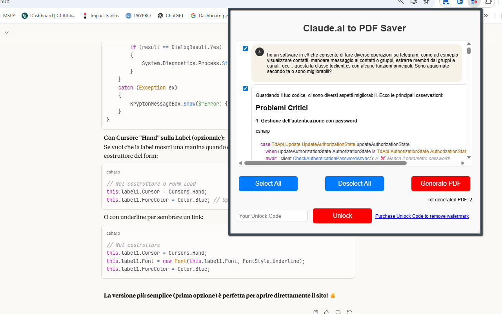
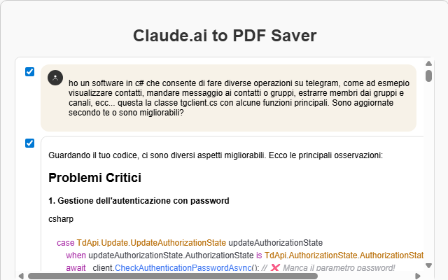

Claude to PDF Saver
Claude to PDF Saver lets you export and save your Claude.ai conversations as beautifully formatted PDF files with just one click. The extension automatically extracts both your messages and Claude’s replies, then converts them into a clean, chat-style PDF that’s easy to read, share, and archive.
Instead of manually copying and pasting long threads, you can use this tool to capture full conversations — or selectively choose specific questions and answers — and turn them into professional documents in seconds. Interface elements, buttons and distracting UI clutter are removed, while the logical structure of the dialogue is preserved with chat bubbles, spacing and avatars.
Whether you’re saving tutorials, technical responses, brainstorming sessions, AI-generated documentation or complex workflows, Claude to PDF Saver helps you export your content in a clean, reusable format. Long conversations are handled smoothly, with automatic page merging for a continuous reading experience.
All processing happens locally in your browser. The extension does not upload anything to external servers and does not log your data. The Free version includes unlimited exports with a small watermark; the PRO version removes the watermark and gives you a cleaner layout suitable for print or publication.
Install Claude to PDF Saver from the Chrome Web Store✨ Features
- Full conversation extraction: captures both user messages and Claude responses.
- Clean PDF layout: chat-style formatting with bubbles, alignment and structured flow.
- UI cleanup: removes unnecessary icons, buttons, menus, and duplicate elements.
- Auto-merge pages: supports long conversations and merges them into a single document.
- Smart formatting: message colors, spacing and avatar icons to mirror the chat experience.
- Selective export: choose specific messages or parts of the conversation before generating the PDF.
- Local processing: everything runs in your browser — no remote servers involved.
🆓 Free Version
- Unlimited PDF exports — no time limit and no cap on the number of conversations.
- A small watermark is applied to generated PDFs.
🚀 PRO Version
- No watermark: export clean, professional PDFs suitable for printing and publishing.
- Cleaner layout: refined spacing and formatting for reports, e-books or client deliverables.
🧭 How It Works
- Install Claude to PDF Saver from the Chrome Web Store.
- Open a conversation on Claude.ai that you want to save.
- Let Claude finish generating its responses and any long answers.
- Click the extension icon in the browser toolbar to open the popup.
- Choose whether to export the entire chat or select specific messages.
- Click Export to PDF.
- The extension extracts the conversation, cleans up the UI and builds a formatted PDF.
- Your browser’s save dialog will appear so you can choose where to store the file.
- Open the PDF in any viewer, share it, print it, or add it to your personal knowledge base.
🧰 Perfect For
- Students & researchers: export explanations, literature reviews, and study sessions.
- Developers & engineers: save debugging threads, code examples and technical discussions.
- Writers & content creators: turn brainstorming sessions and outlines into ready-to-use documents.
- Professionals: document AI workflows, procedures, and client-facing content created with Claude.
- Anyone using Claude as a productivity tool: keep your best conversations organized and reusable.
⭐ Why use this tool?
Claude often provides long, structured responses — code, tables, checklists, step-by-step instructions. Manually copying and pasting this information into documents is slow and error-prone. Claude to PDF Saver lets you convert those valuable conversations into reusable PDFs: notes, tutorials, reports, e-books, technical docs and more.
Stop copying and pasting. With this extension you can keep your knowledge organized, searchable and ready to share in just a few clicks.
📷 Screenshots


🔒 Privacy
Claude to PDF Saver is designed with privacy as a priority:
- The extension does not collect or send your data to any server.
- All processing happens locally in your browser on the current Claude.ai tab.
- No account or sign-up is required.
To function correctly, the extension typically requires a few basic permissions:
- activeTab / host permissions: to read the conversation content from the Claude.ai page when you start the export.
- scripting / tabs (depending on manifest): to inject the extraction code and capture the messages.
- downloads: to save the generated PDF to your device.
- storage: to remember user preferences and PRO unlock status.